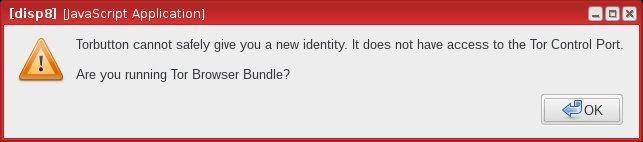

Experienced this issue while troubleshooting the domain isolation features of TBB. I don’t usually use the New Identity feature.
TBB 6.0.5 in Qubes 3.1
Appears to be related to Whonix. Unsure if it is Qubes-specific.
To reproduce:
1: launch Whonix-WS dispVM.
2: launch torbrowser
3: click New Identity
4: results in error

whonixcheck in dispVM reports:
[ERROR] [whonixcheck] Tor Bootstrap Result:
Tor's Control Port could not be reached!
whonixcheck in all other appVMs also report same error.
5: close torbrowser
6: whonixcheck connects to control port successfully in all VMs again.
7: interesting part: launch torbrowser again in same dispVM
8: whonixcheck can not connect to control port in any VM again
Seems like a trivial issue but I’d rather err on the side of caution with anything related to the Control Port.